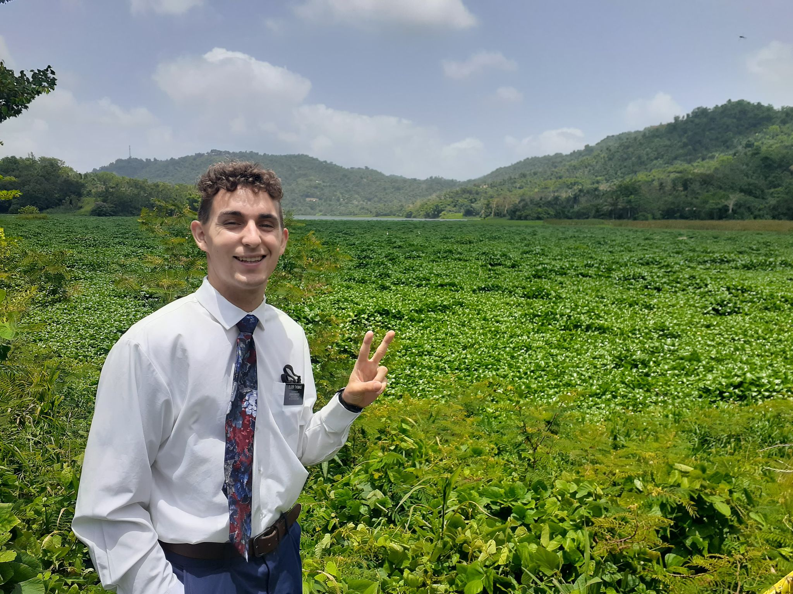
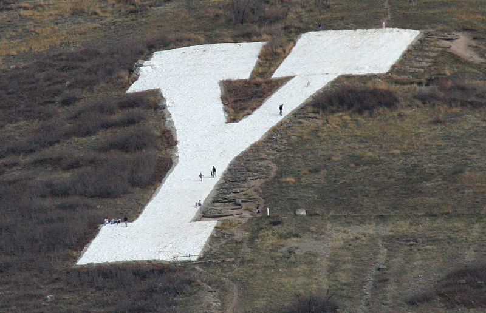

My Time in Puerto Rico
From the Beginning of my time in Puerto Rico I saw it as something special. The incredible beaches, green scenery, and unbelievable views. I truly was blessed to serve on an island that was full of people ready and open to hear the Restored Gospel of Jesus Christ. The things I learned there will always have a strong impact on the rest of my life.
I had six different areas on my mission: a small town called Aibonito, the capital San Juan, Bad Bunnys hometown Vega Baja, the town of color Yauco, home of the prettiest beach in the world Aguadilla, then finished in the rushing suburbs of Caguas.
First Year in College
Coming back from Puerto Rico I only had eight days from when I got home to Arizona and to when I had to go up to Utah to start college. I began my college experience at Utah Valley University with intention to get my Associates Degree from there and then transfer over to Brigham Young University for my degree.
From when I first arrived to UVU and when I finished I had been able to develop some key attributes that I now carry today. One of them being the ability to priortize the important things. In high school that was one of my main weaknesses, being able to focus on what was needed to be done and what I could do later. With that being said, I was able to finish my Associates Degree after a year and a half with a 3.83 GPA which I found to be successful.
"No body is too busy, it is just a matter of priorties." -Joseph Thomas
Second Year of College
As a goal of mine, in January of 2024 I finally made the switch to Brigham Young University. I did not think of it being a hard switch but within just a couple of weeks I began to feel the pressure of BYU. By the people I surrounded myself with and the content I was learning, I knew that this was not just another semester I would take. I was never discouraged but rather motivated.
 "Trouble will come, but discouragement doesn't have to. If we work now to prepare ourselves through patient and faithful discipleship, we will get through."" -Jeffery R. HollandI know that my time at BYU will prepare me for tough future assingments that will come. Internships, interviews, or jobs! The programs at BYU will help me acheive my future goals.
Future Plans
This upcoming summer is full of things to help me progress in my career. Starting in May, I will begin an internship with ComCast learning how they franchise and set up potential stores for XFinity. From there in July, I will begin my long-term road by working with my Uncle who works as a Divorce Lawyer. After the summer, in the Fall I will be working at Northwestern Mutual as an intern for Financial Advising. My next goal is to strengthen my ability to understand financing and know if I can truly work in law!